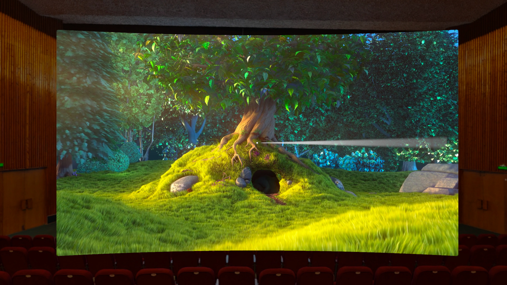

Amo VR is a cinema and media player for VR headsets. It plays your own videos, video links, M3U playlists and media servers on a big screen in eleven environments.

Videos and M3U playlists on your headset or a USB drive, with matching subtitle files picked up automatically.
Paste a link to a video, a live stream or an M3U playlist. Playlists open with categories and a filter.
Type the address of your media server or media web app. Amo VR remembers it and can open it every time it starts.
Amo VR does not provide, sell or preload any films, channels or playlists. You play media you own or have the right to watch.
No account, no ads, no tracking. Everything you add stays on your headset. Read the privacy policy.